Overview
35% of products were previously bulk boosted from the seller hub page. With the removal of the Seller Hub, sellers no longer had a central place to bulk manage their listings (Boost), which led to a decrease in Boost adoption.
Seller Hub was the section of the Depop app that provided a dedicated home for all the information and key actions sellers need to run their shops successfully. Boosted Listings is the tool that helps sellers promote their listings in search and reach more buyers.
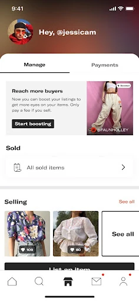
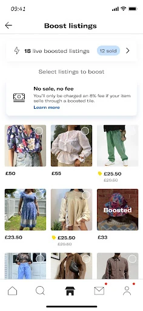
What’s the impact?
- Boosting from the shop page went from 12% in January 2024 to 30.5% in May 2024
- 36% more sellers boosted from the shop page in the copy A/B test
- +11% more sellers engaged with the manage listing action
- +32% more sellers boosting from the shop page after unboosted, unsold listings were shown first
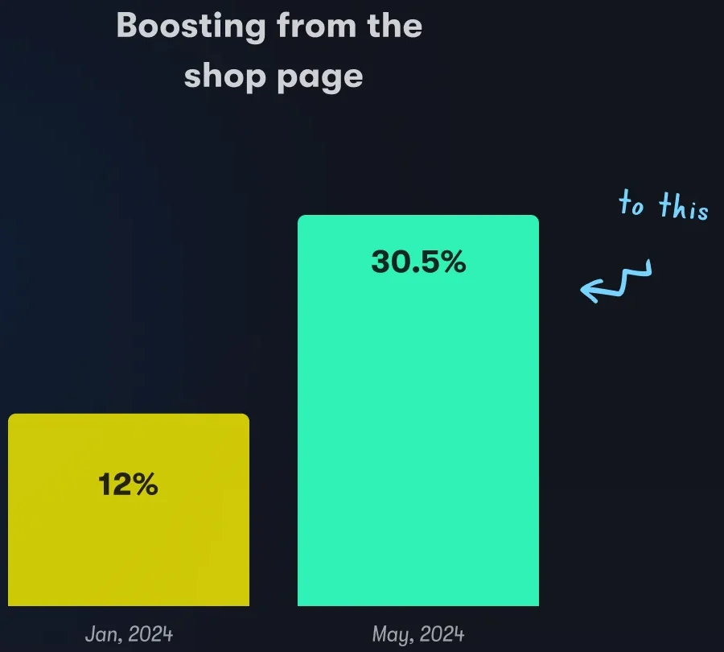
What’s the problem?
With the removal of the Seller Hub, the Manage Listing page became the new hub for sellers to bulk manage their listings. It still wasn’t a place they could use that way.
Why couldn’t sellers bulk manage their listings here as it is? The previous layout prioritized listings based on how they appeared on the seller’s profile, regardless of whether they were active listings or not. Most shops on Depop for a while have sold at least 70% of their items.
- Reduced visibility of actions (Boost, Discount…)
- Limited view of active listings to bulk manage
- Limited view of active listings not boosted & discounted
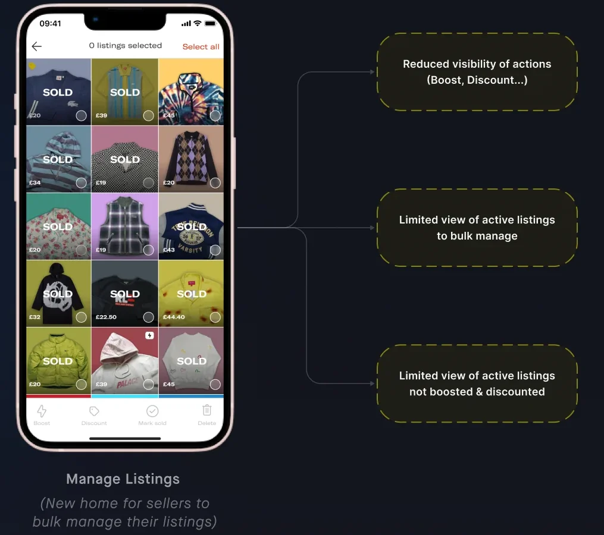
What did sellers need?
As a seller, I want to quickly identify the relevant listings to my action (active and unboosted if I want to boost) to save time and increase sales.
As a seller, I want to discover all the available actions I can take to manage my listings in a clear and intuitive way.
How might we simplify navigation for sellers within the ‘Manage Listing’ page to ensure that they can easily discover boosted listings and other key actions?
Two themes came out of that. Clear navigation: improve the discoverability of key actions like boosting, discounting, etc. Simplicity: make it easier for sellers to bulk manage their listings.
What did we try?
Concept A
Tabs. 62% found this very easy.
- Making it easy and fast for sellers to identify their active listing to manage.
- Pro. Participants found the boosting & discount flow fast, intuitive, and easy to perform.
- Con. The seller actions at the bottom was not immediately noticeable.
Concept B · Prototype 2
Pop up. 85% found this very easy.
- Making it easy for sellers to discover bulk management actions.
- Pro. Participants generally found the flows fast and easy because the actions were visible.
- Con. Some people selected items on the profile, intending to boost, instead of using the manage listing CTA.
Each chart was 13 responses, from very difficult (1) to very easy (7). Tabs: 0%, 0%, 0%, 8%, 15%, 15%, 62%. Pop up: 0%, 0%, 0%, 0%, 15%, 0%, 85%.
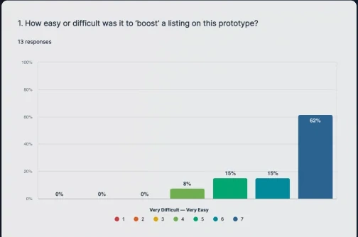
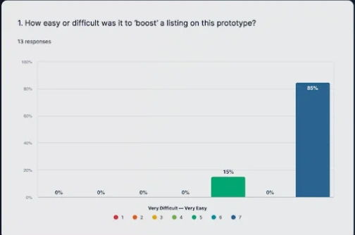
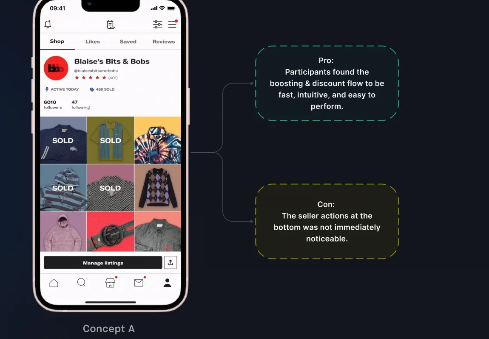
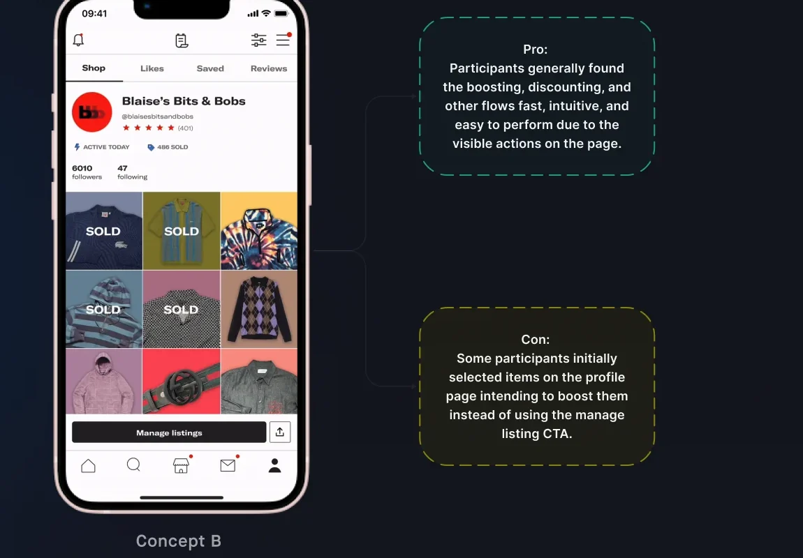


Sellers want to be informed that they can perform bulk actions, such as boosting and creating discounts, directly on the manage listings page. Prototype 2 simplified discovering and selecting those actions. 85% of participants rated Prototype 2 as easier to navigate and use compared to other prototype. That is the pop up: the only prototype 85% of sellers found very easy to use.
What shipped?
The button says what the page does
Before, sellers didn’t know they could bulk manage their listings using the Manage Listings feature. After, it was clearer that ‘Manage Listings’ is about bulk management of listings. The button reads Bulk actions.
36% more sellers boosted from the shop page during the A/B test as a result of the improved UX copy.
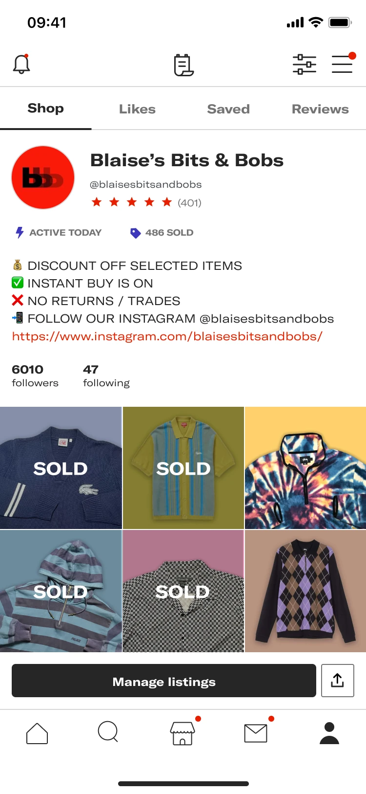
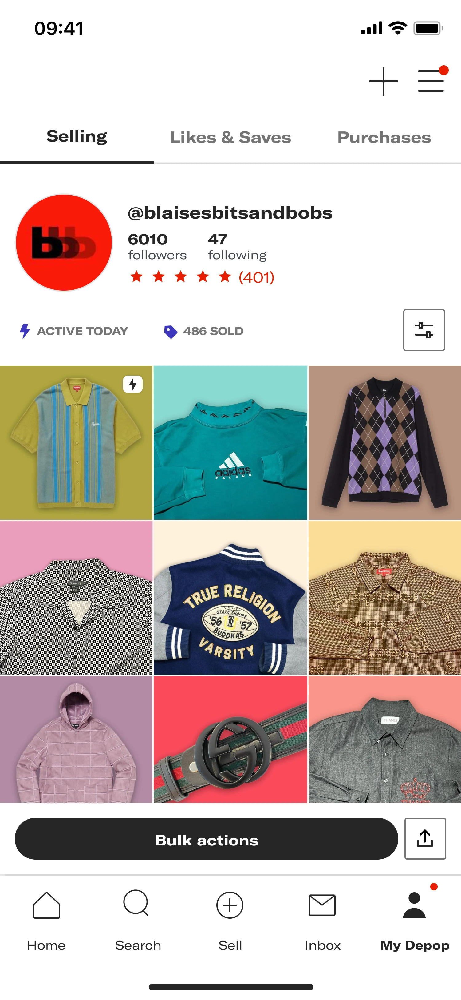
Every action is in one sheet
Before, sellers couldn’t discover all the available actions to manage their listings in a clear and intuitive way. After, Bulk actions lists Boost, Discount, Mark as sold, Unboost and Delete.
+11% more sellers engaged with the manage listing action during the A/B test.
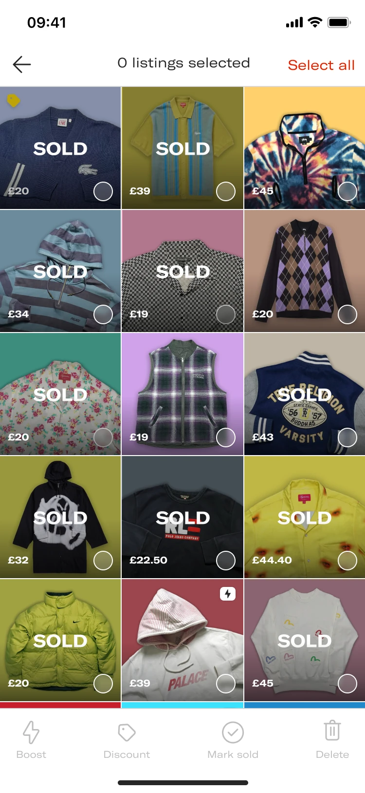
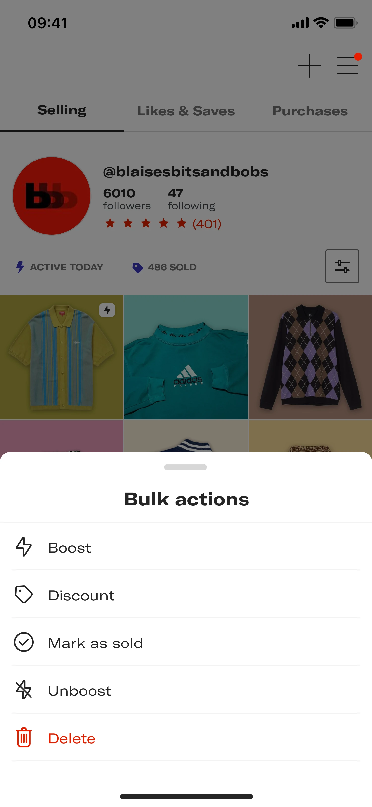
Open on listings that can still be boosted
Before, the same sold-first grid. After, sellers were shown listings based on items that are unboosted and unsold.
+32% more sellers boosting their listings from the shop page during the A/B test as a result of the improved visibility of the actions.
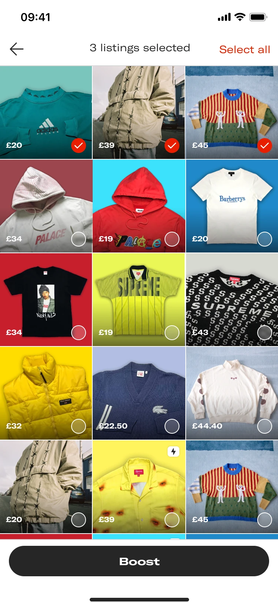
How did we do?
Boosting from the shop page went from 12% in January 2024 to 30.5% in May 2024. The A/B results above are separate reads: copy, the action sheet, and showing unboosted, unsold listings first.